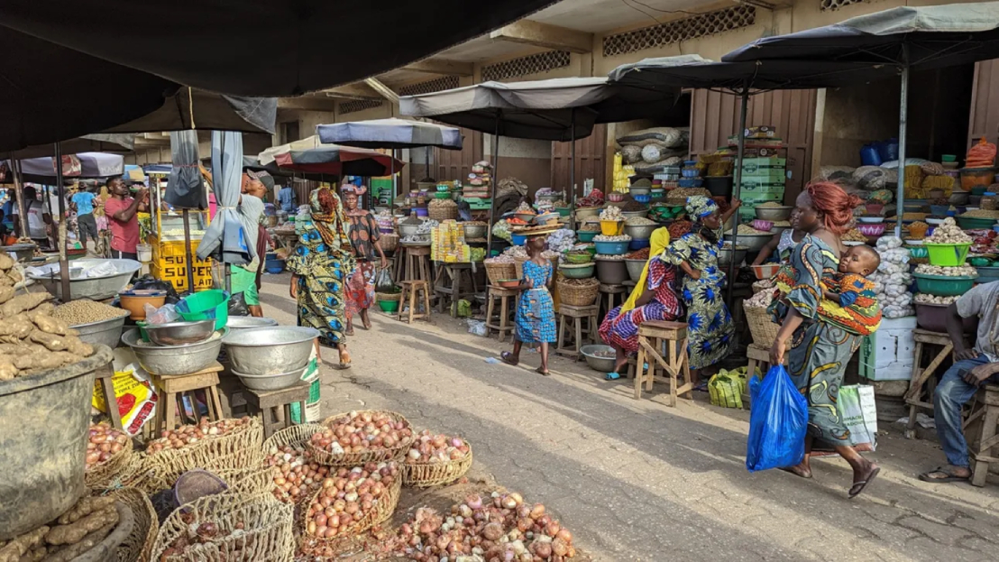

Le Marché de Grand-Popo, est un lieu vibrant et dynamique qui reflète la culture locale

Caractéristiques du Marché
Produits locaux : Le marché propose une grande variété de Produits, notamment des fruits et légumes frais, des produits de la mer,
et des artisanats locaux. On y trouve également des textilles, des bijoux et d'autres articles fabriqués par des artisants de la région.
ambiance animée :Le marché est un lieu de rencontre pour les habitants et les visiteurs, créant une atmosphère vivante et conviviale.
On y entant souvent des échanges animée entre vendeurs et acheteurs.
Accès et localisation : situé près de la plage, le marché attire non seulement des résidents, mais aussi des touristes qui visitent Grand-Popo
pour ses paysages et ses cultures.
Impact économique : Le marché joue un role crucial dans l'économie locale, soutenant les agriculteurs et les artisants.